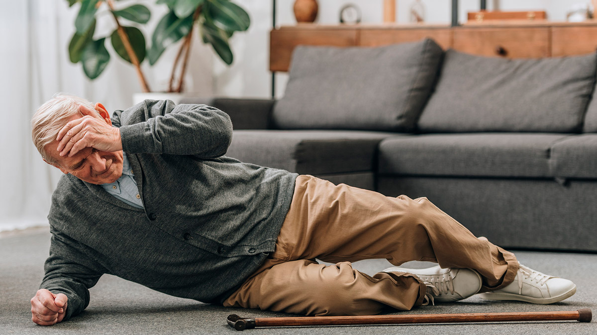

Cuidados Imediatos
Após uma queda, siga estes passos para garantir a segurança da pessoa afetada:
- Certifique-se de que a pessoa está consciente. Converse com ela para avaliar seu estado de alerta.
- Imobilize a pessoa, evitando que ela se mova, principalmente se suspeitar de fraturas ou lesões na coluna.
- Chame assistência médica, especialmente se houver perda de consciência, dor intensa, ou dificuldade para se mover.
- Se a pessoa parecer estável, ajude-a a levantar com cuidado, oferecendo apoio.
Prevenções para o Futuro
Para reduzir o risco de quedas, adote as seguintes medidas preventivas:
- Mantenha os ambientes organizados e livres de obstáculos como fios soltos e tapetes.
- Instale barras de apoio em áreas como banheiros e escadas, e use corrimãos.
- Garanta uma boa iluminação em toda a casa, especialmente em corredores e escadas.
- Use calçados com solas antiderrapantes e evite andar descalço em pisos escorregadios.
- Incentive a prática regular de exercícios que fortaleçam os músculos e melhorem o equilíbrio, como alongamentos e caminhadas.